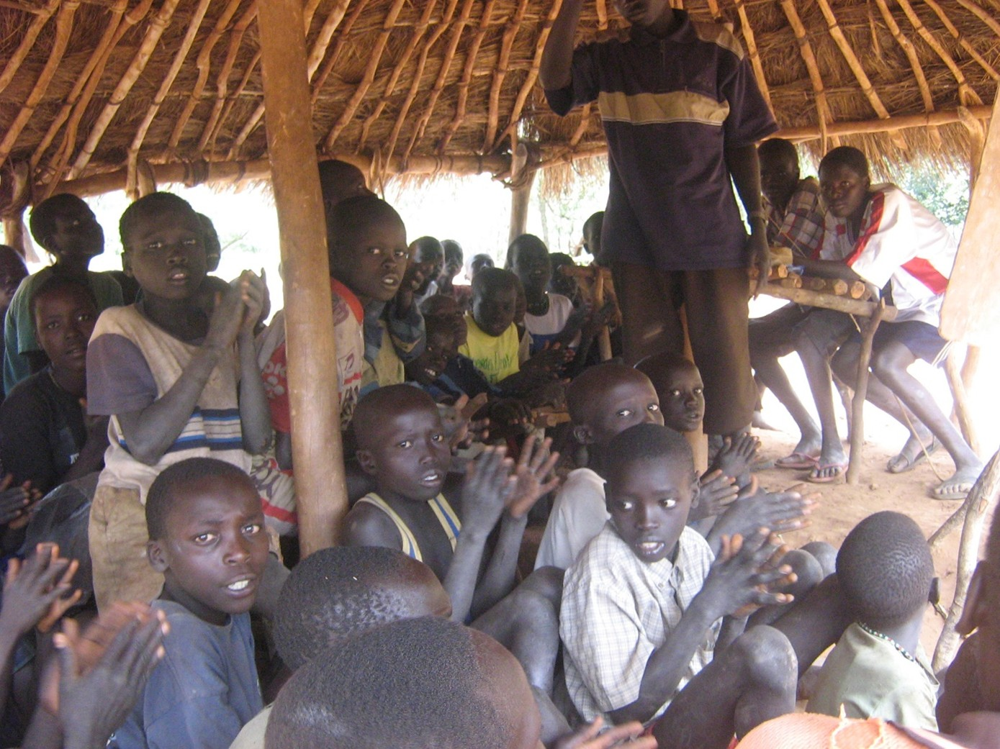

2007 MISSION TO SOUTH SUDAN
Mission To South Sudan October 29, to March 8, 2008. Two SSCLF dedicated members plan to make a school building trip to Ngatuba Village, Southern Sudan.Mission to South Sudan on October 29 and November 5, 2007 has taken place. Two members left on October 29, and one of them followed on November 5, 2007. SSCLF members are determined to spend 3-4 months in Southern Sudan to build the school in Budi County, (Ngatuba area), in Southern Sudan. The school is constructed at Kitela.
- ✔ The members SSCLF are extremely pleased and excited to share with you all out there the current development which SSCLF members are undertaking in Southern Sudan. On Oct 29, 2007, Jilasio Lokuawii left Calgary to go and join the community members to volunteer build a Primary school in Kitela (Ngatuba area). Then on November 5, 2007, Mario Biro, and Lino Lomwa left to join Jilasio.
- ✔ However, on November 28, 2007, Jilasio arrived in Chukudum with the building materials that he purchased from Kenya. Then Hilary Lohine Taban immediately reported the excitement from the community members in Southern Sudan in the smallest town of Chukudum. The community members were extremely very happy.
- ✔ Therefore, they expressed their great feelings through traditional music. The men and women went to the open area and hit the ground on their bare foot or slippers. Below is the report from Hilary.
- ✔ The people from the Village of Ngatuba were travelling many miles to pick up the materials in Chukudum. It is such an excitement to see the people have traveled a long distance to carry wheelbarrows, cements, Nails, timbers and so on their village to build a primary school. They have to travel 9 to 10 hours to reach their destinations. Wow, that is a great spirit!
Gallery & Work


